definition:
A style of painting characterized by
small yet blatant brushstrokes offering
the bare impression of form and unblended
color with an emphasis on the accurate depiction of
natural light.
DEVELOPMENT
The development of Impressionism was led
by a group of painters including Claude Monet,
Alfred Sisley, Pierre Auguste Renoir along
with other Paris-based artists from the
early 1860s. Impressionists realized
that rather than painting in a studio,
by painting quickly
in the open air or in front of their subjects,
they could capture the momentary and
transient effects of sunlight. This process
brought about a greater awareness of light and color
and the shifting pattern of the natural scene.
MONET
Monet was the leader of the movement. His brief brush strokes
and fragmented color application made their way into the works
of others. Monet showed special interest in the passage of time
in his portrayal of light. Throughout his life,
he expanded his Impressionist practice, culminating
in his multiple studies of the Waterlily Pond produced
from 1898 to 1926, of which the later works in the
series finished just before his death achieve an almost
abstract quality.
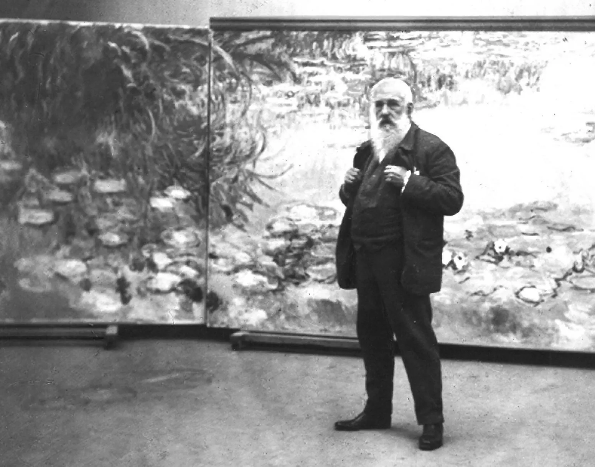
Claude Monet
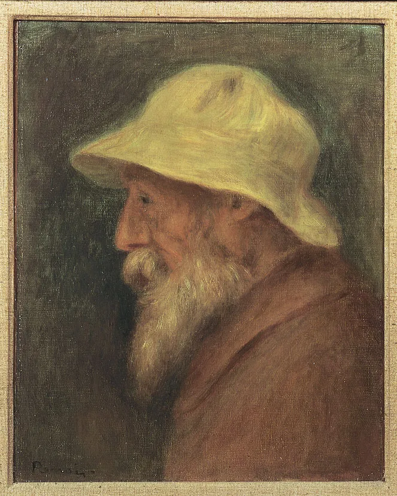
A self-portrait by
Pierre Auguste Renoir
RENOIR
The other leader of the Impressionist movement was Renoir.
He and Monet had similar interests but Renoir preferred to
capture artificial light in areas such as dance halls and
directed his studies of the effects of light on figures,
primarily the female form instead of the scenary, mostly
focusing on portraiture. Renoir favored the mundane
realities of life as his subject matter and present
an optimistic atmosphere in his paintings.
NOTABLE WORKS
Below are some paintings done by Impressionist artists.
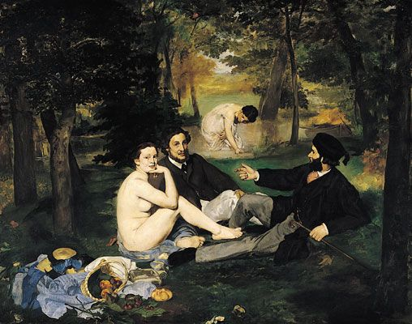
Le déjeuner sur l'herbe (1863) by Édouard Manet
Le déjeuner sur l'herbe, translated as Luncheon on the Grass,
was considered as the most controversial artwork of the 19th
century. The explicit depiction of nudity in a contemporary
setting induced outrage and scorn from high-minded salon
juries as well as middle-class audiences of the era. Nevertheless,
this work earned Manet fame and patronage.
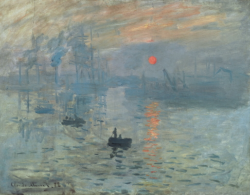
Impression, Sunrise (1872) by Claude Monet
Monet's Impression Sunrise is sometimes cited as the
work that gave birth to the Impressionist movement.
It was the critic Louis Leroy's derogatory comments
on this work and its title, as a satirical review
of the First Impressionist Exhibition of 1874,
that gave life to the term "Impressionism".
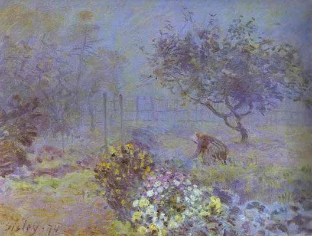
Fog, Voisins (1874) by Alfred Sisley
The beautiful pastoral scene presented by Alfred Sisley's
work incorporates a gentle color-palette, emits a sense
of tranquility and peace, as well as emphasis of the
total quality and atmosphere of a landscape over
and above certain details and human forms.
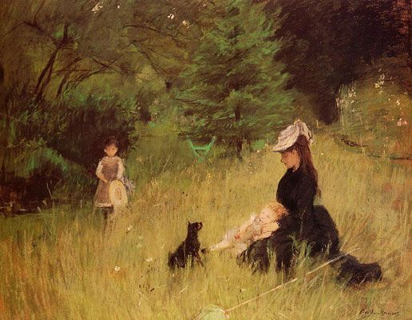
In a Park (1874) by Berthe Morisot
One of the key artists of the Impressionist circle, Berthe
Morisot is renowed for both her poignant landscapes and compelling
portraits. This work merges these elements into a serene
family portrait set in a bucolic garden.
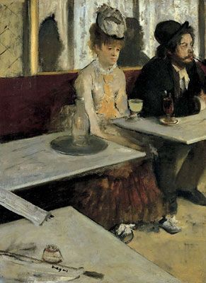
L'Absinthe (1876) by Edgar Degas
Like most Impressionist paintings, this work was deemed as
scandalous when it was first exhibited. This scene presents two
unfortunate individuals slumped on a bench outside a Parisian
café and conveys a deep sense of isolation and degradation,
uncovering another side to the Impressionists' emphasis
on truth to life.
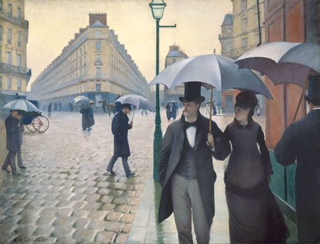
Paris Street, Rainy Day (1877) by Gustave Caillebotte
The work of Gustave Caillebotte adheres to a distinct Realist
aesthetic. However, it also refelcts a concern with modern
life, which was central to Impressionism. Similar to
Caillebotte's other works, this painting explores the
effect of modernity on the human psyche, fleeting impressions
of the street, and the result of the ever changing urban
sphere upon society.
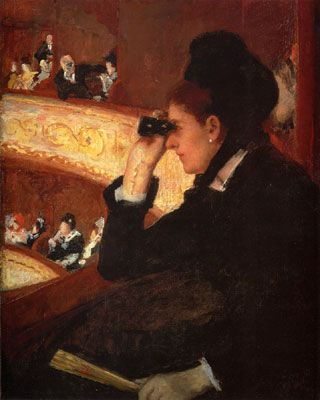
At the Opera (1880) by Mary Cassatt
Plenty of Mary Cassatt's paintings gives emphasis on the
surroundings and citizens of Paris under Haussmanization,
but also giving special attention towards the private
and public lives of women. At the Opera is Cassatt's
depiction of the recently-built Palais Garnier of the
Paris Opera which was the social hub for the upper classes
of the city.
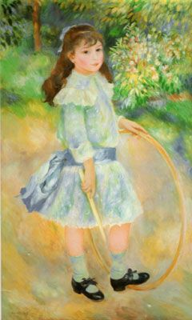
Girl with a Hoop (1885) by Pierre-Auguste Renoir
Sometime during the mid 1880s, Renoir was commissioned to paint
a potrait of a nine-year-old girl named Marie Goujon. In this work,
Renoir incorporates a new style, "aigre" which is translated as "sour",
inspired by the work of Renaissance painters, which indicates a
new emphasis on hardness and clarity of form.
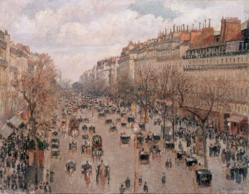
The Boulevard Montmartre, Afternoon (1897) by Camille Pissarro
Boulevard Montmartre, Afternoon applies the techniques of
his earlier plein-air landscapes to the modern city. The work uses
broad strokes of paint, carefully applied to the canvas, to
represent the fleeting nature of modern life, and the visual
impression made by the metropolis.
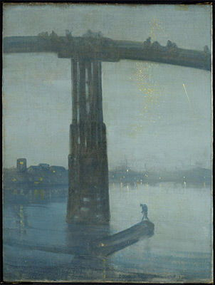
Nocturne: Blue and Gold - Old Battersea Bridge (1872-75) by James Abbott McNeill Whistler
Whistler's Nocturne: Blue and Gold is known as one of the most dazzling works of the wider
Impressionist movement. It was produced at the time of urban
reconstruction in London, and portrays the old Battersea Bridge
found in the south of the city from a riverbank perspective,
along with the lights of the newer Albert Bridge blinking in the
background as rockets cascade from the sky.